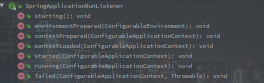
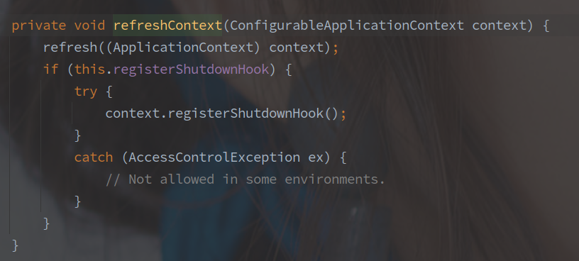
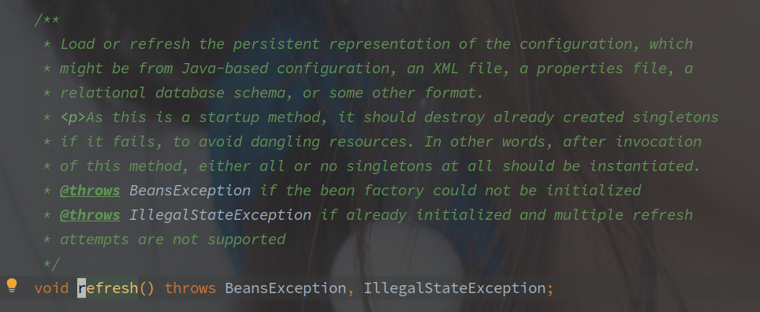
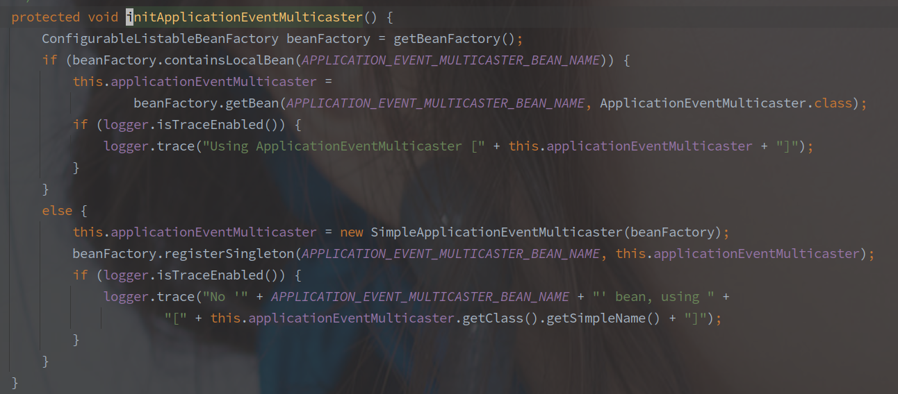
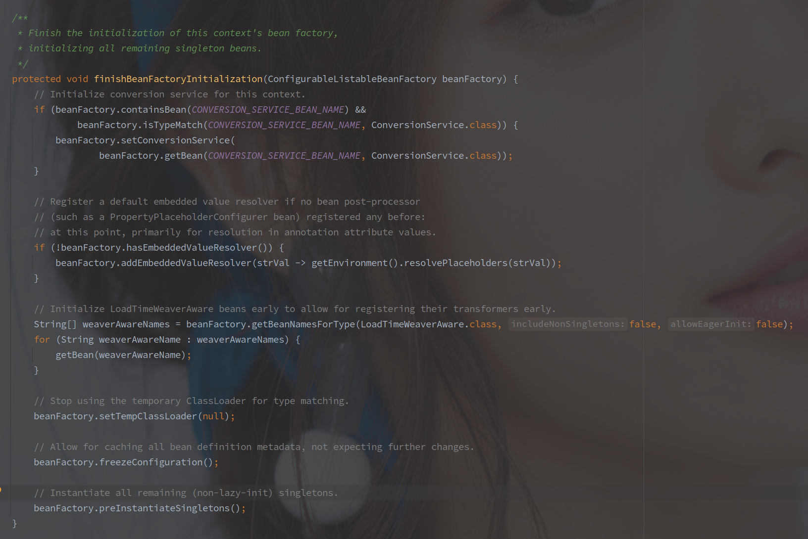
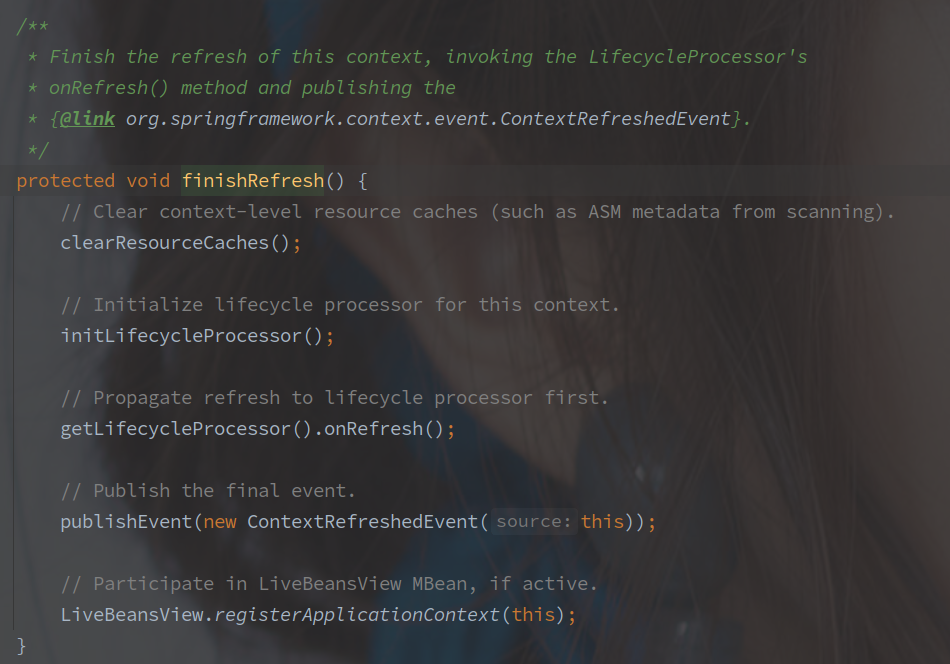

SpringBoot的启动流程概述
尽量不会有太多的代码，以理清楚流程为主，复杂的代码会单独一个文件。
以 SpringBoot Servlet Web 应用为基础分析.
SpringBoot 版本为 2.2.6.RELEASE
[TOC]
上层调用
@SpringBootApplication
public class MvcApplication {
public static void main(String[] args) {
SpringApplication.run(MvcApplication.class, args);
}
}
以上是最基础的 SpringBoot 应用启动代码，调用 SpringApplication 的 run 静态方法启动 SpringBoot 的整个容器。
SpringApplication 构造函数
// SpringApplication
// 入参中的的PrimarySources是配置主类,也就是MvcApplication.class.
public SpringApplication(ResourceLoader resourceLoader, Class<?>... primarySources) {
// 资源加载器,此处为null
this.resourceLoader = resourceLoader;
Assert.notNull(primarySources, "PrimarySources must not be null");
// 主要数据源集合
this.primarySources = new LinkedHashSet<>(Arrays.asList(primarySources));
// Web应用类型
this.webApplicationType = WebApplicationType.deduceFromClasspath();
// 设置初始化器,具体有哪些看下文
setInitializers(
(Collection)getSpringFactoriesInstances(ApplicationContextInitializer.class));
// 设置监听者
setListeners((Collection) getSpringFactoriesInstances(ApplicationListener.class));
// 推断应用主类，此处代码我感觉还是很新奇的
this.mainApplicationClass = deduceMainApplicationClass();
}
ApplicationContextInitializer - 初始化器
通过 spring.factories 文件的 SPI 机制获取到所有 ApplicationContextinitializer 的实现类。
ApplicationContextInitializer 作为应用初始化器，在 prepareContext 阶段中调用，用来在容器启动过程中对应用的上下文进行自定义配置。

initialize(C applicationContext) 方法就初始化方法，参数为正在创建的 ApplicationContext。
对于 SpringCloud，此时还会有 PropertySourceBootstrapConfiguration 类，该类用于获取配置中心的数据。
ApplicationListener - 监听器
通过 spring.factories 文件的 SPI 机制获取到所有 ApplicationListener 的实现类。
这里采用的是观察者模式，所以被观察者 ApplicationCopntext 需要持有所有观察者 ApplicationListener 的引用。

ApplicationListener 继承与 JDK 的 EventListener 类，监听某个 ApplicationEvent。
在容器初始化的各个阶段都会发布不同类型的事件，借助监听器可以在特定的事件执行自定义操作。
推断主类
mainApplicationClass 的推断过程很有意思，直接构造一个 RuntimeException 然后遍历异常的堆栈信息查找 main 方法，获取当前主类。
...
try {
StackTraceElement[] stackTrace = new RuntimeException().getStackTrace();
for (StackTraceElement stackTraceElement : stackTrace) {
if ("main".equals(stackTraceElement.getMethodName())) {
return Class.forName(stackTraceElement.getClassName());
}
}
...
Run()方法
run 方法是启动的核心方法，包含了环境准备，监听事件的发布，上下文的刷新及后续处理等等。
执行方法的结果就是返回一个可使用的 ConfigurationApplicationContext ，也可以理解为就是应用上下文的装配过程。
public ConfigurableApplicationContext run(String... args) {
// 用于记录时间，可以当做是秒表
StopWatch stopWatch = new StopWatch();
stopWatch.start();
// 这个就是最终要返回的上下文对象
ConfigurableApplicationContext context = null;
// 异常报告集合
Collection<SpringBootExceptionReporter> exceptionReporters = new ArrayList<>();
// Headless相关配置
configureHeadlessProperty();
// 工厂加载机制获取SpringApplicationRunListener，并封装为一个对象
// SpringApplicationRunListener是应用启动前期的广播器.
SpringApplicationRunListeners listeners = getRunListeners(args)；
// 触发ApplicationStartingEvent
listeners.starting();
try {
// 对main方法的入参进行包装
ApplicationArguments applicationArguments = new DefaultApplicationArguments(args);
// 准备容器环境
// 会触发ApplicationEnvironmentPreparedEvent，读取配置文件中的内容
// 会将环境与当前的SpringApplication绑定
ConfigurableEnvironment environment = prepareEnvironment(listeners, applicationArguments);
// 配置忽略的Bean信息,`spring.beaninfo.ignore`配置项
configureIgnoreBeanInfo(environment);
// 输出Banner
Banner printedBanner = printBanner(environment);
// 创建对应的应用上下文
// 当前环境的上下文主类是AnnotationConfigServletWebServerApplicationContext
context = createApplicationContext();
// 还是工厂加载模式，获取异常的报告之类的
exceptionReporters = getSpringFactoriesInstances(SpringBootExceptionReporter.class,
new Class[] { ConfigurableApplicationContext.class }, context);
// 准备上下文
// 该阶段会调用构造函数中获取的ApplicationContextInitializer
// 也会将sources中的BeanDefinition加载进BeanFactory
prepareContext(context, environment, listeners, applicationArguments, printedBanner);
// 刷新上下文
refreshContext(context);
// 刷新上下文之后的操作
// Servlet Web环境下并没有实现该方法
afterRefresh(context, applicationArguments);
// 计时结束
stopWatch.stop();
if (this.logStartupInfo) {
new StartupInfoLogger(this.mainApplicationClass).logStarted(getApplicationLog(), stopWatch);
}
// 广播ApplicationStartedEvent
listeners.started(context);
callRunners(context, applicationArguments);
} catch (Throwable ex) {
handleRunFailure(context, ex, exceptionReporters, listeners);
throw new IllegalStateException(ex);
}
try {
listeners.running(context);
} catch (Throwable ex) {
handleRunFailure(context, ex, exceptionReporters, null);
throw new IllegalStateException(ex);
}
return context;
}
1.启动计时器
// SpringApplication
StopWatch stopWatch = new StopWatch();
stopWatch.start();
// StopWatch
public void start() throws IllegalStateException {
start("");
}
public void start(String taskName) throws IllegalStateException {
if (this.currentTaskName != null) {
throw new IllegalStateException("Can't start StopWatch: it's already running");
}
this.currentTaskName = taskName;
// 采用本地系统时钟
this.startTimeNanos = System.nanoTime();
}
上钟，计时开始。
2. 配置 Headless
private static final String SYSTEM_PROPERTY_JAVA_AWT_HEADLESS = "java.awt.headless";
private void configureHeadlessProperty() {
// System的相关配置
System.setProperty(SYSTEM_PROPERTY_JAVA_AWT_HEADLESS,
System.getProperty(SYSTEM_PROPERTY_JAVA_AWT_HEADLESS, Boolean.toString(this.headless)));
}
Headless 模式是应用的一种配置模式。
在服务器可能缺少显示设备、键盘、鼠标等外设的情况下可以使用这种模式。
3. 获取并启动监听器
// SpringApplication
SpringApplicationRunListeners listeners = getRunListeners(args)；
private SpringApplicationRunListeners getRunListeners(String[] args) {
Class<?>[] types = new Class<?>[] { SpringApplication.class, String[].class };
return new SpringApplicationRunListeners(logger,
getSpringFactoriesInstances(SpringApplicationRunListener.class, types, this, args));
}
这里获取的监听器和之前构造函数中的不同，这里获取的是 SpringApplicationRunListener 的实现类，并包装为 SpringApplicationRunListeners。
SpringApplicationRunListener 是专门的对容器启动时各个阶段的监听，从接口上就定义了启动的各个阶段。

SpringApplicationRunListener 其默认的实现只有 EventPublishingRunListener，以下为 EventPublishingRunListener 的构造函数：
// EventPublishingRunListener的构造函数
public EventPublishingRunListener(SpringApplication application, String[] args) {
this.application = application;
this.args = args;
this.initialMulticaster = new SimpleApplicationEventMulticaster();
// 获取 SpringApplication 中的所有监听器，并添加到内部的 Multicaster 中
for (ApplicationListener<?> listener : application.getListeners()) {
this.initialMulticaster.addApplicationListener(listener);
}
}
EventPublishingRunListener 会获取 SpringApplication 中已有的监听器。
EventPublishingRunListener 是应用启动初期的监听者，也是借助于 SimpleApplicationEventMulticaster 广播事件，实现如下图：

另外值得注意的是，在 contextLoaded 事件之后事件的发布又是使用 ApplicationContext 来完成的，因为 ApplicationContext 的基本初始化已经完成了。

小结
SpringBoot 的启动阶段，各类监听器起了非常关键的角色，包括配置文件的加载都是通过监听器完成的。
ApplicationContext 本身就是一个事件广播器，但是在 SpringBoot 的启动阶段，ApplicationContext 还没有初始化好的时候就需要广播部分事件。
所以出现了 SpringApplicationRunListener，它定义了启动流程的各个阶段，也作为初期的事件广播器。
SpringApplicationRunListener 和 ApplicationContext 广播事件也都是通过 SimpleApplicationEventMulticaster 实现的。
在 contextLoaded 中，SpringApplicationRunListener 将它持有的所有监听者全部添加到了 ApplicationContext 中，所以后续的事件广播又是通过 ApplicationContext 自己来了。
3. 发布 ApplicationStartingEvent
NOOP。
4. 创建并准备环境
// SpringApplication#prepareEnvironment
private ConfigurableEnvironment prepareEnvironment(SpringApplicationRunListeners listeners,
ApplicationArguments applicationArguments) {
// 创建或者获取一个 ConfigurationEnvironment 对象
ConfigurableEnvironment environment = getOrCreateEnvironment();
// 配置 Profiles 和 PropertySource
configureEnvironment(environment, applicationArguments.getSourceArgs());
ConfigurationPropertySources.attach(environment);
// 发布环境准备就绪的事件，进一步加载配置
listeners.environmentPrepared(environment);
bindToSpringApplication(environment);
if (!this.isCustomEnvironment) {
environment = new EnvironmentConverter(getClassLoader()).convertEnvironmentIfNecessary(environment, deduceEnvironmentClass());
}
ConfigurationPropertySources.attach(environment);
return environment;
}
该方法中首先创建了 Environment，并且进一步配置了部分 PropertySources 以及 Profile 属性。
profile 属性就只活跃的环境，例如项目中往往存在 application-dev.yml 以及 application-test.yml 两种环境的配置文件。
PropertySource 主要是对项目启动参数的包装，以及在初始化的时候带有的一些系统级的 PropertySource
PropertySource 简单来说就是一个 K/V 的配置属性。
简单配置之后发布了 ApplicationEnvironmentPreparedEvent ，监听该事件的主要监听器：
ConfigFileApplicationListener 会监听该事件并读取配置文件，Consul 等远程配置中心的配置并不会在这是读取。
BootstrapApplicationListener 会监听该事件，插队创建 SpringCloud 的 bootstrap 应用上下文。
5. 配置忽略的Bean信息
public static final String IGNORE_BEANINFO_PROPERTY_NAME = "spring.beaninfo.ignore";
// SpringApplication
private void configureIgnoreBeanInfo(ConfigurableEnvironment environment) {
if (System.getProperty(CachedIntrospectionResults.IGNORE_BEANINFO_PROPERTY_NAME) == null) {
Boolean ignore = environment.getProperty("spring.beaninfo.ignore", Boolean.class, Boolean.TRUE);
System.setProperty(CachedIntrospectionResults.IGNORE_BEANINFO_PROPERTY_NAME, ignore.toString());
}
}
方法逻辑很简单，就是在系统配置中没有 spring.beaninfo.ignore 时，将当前环境容器中的对应属性塞进去。
6. 输出Banner
Banner printedBanner = printBanner(environment);
打印 Banner 的。
7. 创建应用上下文
逻辑很简单，根据不同的Web应用类型创建对应的上下文类，具体对应关系如下：
| 环境类型 | 上下文类 |
|---|---|
| Default | AnnotationConfigApplicationContext |
| Servlet | AnnotationConfigServletWebServerApplicationContext |
| Reactive | AnnotationConfigReactiveWebServerApplicationContext |
应用类型是在 SpringApplication 的构造函数中推断出来的。
8. 获取异常的报告方法
exceptionReporters = getSpringFactoriesInstances(SpringBootExceptionReporter.class,
new Class[] { ConfigurableApplicationContext.class }, context);
通过工厂加载模式获取 SpringBootExceptionReporter 实现类，获取的 exceptionReporters 会在 catch 的逻辑里使用，来报告出现的异常情况。
9. 准备上下文
// SpringApplication@prepareContext
private void prepareContext(ConfigurableApplicationContext context, ConfigurableEnvironment environment,SpringApplicationRunListeners listeners, ApplicationArguments applicationArguments, Banner printedBanner) {
// 配置 Environment 到应用上下文
context.setEnvironment(environment);
// 配置一些必要的Bean
postProcessApplicationContext(context);
// 应用所有初始化器
applyInitializers(context);
// 发布上下文准备就绪事件
listeners.contextPrepared(context);
if (this.logStartupInfo) {
logStartupInfo(context.getParent() == null);
logStartupProfileInfo(context);
}
// 注册相关Bean，这些为什么不一起扔到 postProcessApplicationContext 方法呢？
ConfigurableListableBeanFactory beanFactory = context.getBeanFactory();
beanFactory.registerSingleton("springApplicationArguments", applicationArguments);
if (printedBanner != null) {
beanFactory.registerSingleton("springBootBanner", printedBanner);
}
if (beanFactory instanceof DefaultListableBeanFactory) {
((DefaultListableBeanFactory) beanFactory)
.setAllowBeanDefinitionOverriding(this.allowBeanDefinitionOverriding);
}
if (this.lazyInitialization) {
context.addBeanFactoryPostProcessor(new LazyInitializationBeanFactoryPostProcessor());
}
// Load the sources
Set<Object> sources = getAllSources();
Assert.notEmpty(sources, "Sources must not be empty");
// 加载所有的 BeanDefinition
load(context, sources.toArray(new Object[0]));
// 发布上下文已加载完毕事件
listeners.contextLoaded(context);
}
该方法首先配置了环境，而后调用所有的所有的 ApplicationContextInitializer 实现类，重点的实现如下：
BootstrapApplicationListener#AncestorInitializer 作用是将 SpringCloud 的 bootstrap 上下文设置为当前的父上下文，AncestorInitializer** 会进一步创建 ParentContextApplicationContextInitializer 进行初始化。
PropertySourceBootstrapConfiguration 作用是加载远程的配置。
- DelegatingApplicationContextInitializer 会进一步执行 context.initializer.classes 配置下的 ApplicationContextInitializer 实现类。
- ServletContextApplicationContextInitializer 会进一步配置 ServiceContext。
ApplicationContextInitializer 是附加的对 ApplicationContext 的初始化，在 SpringBoot 中算是非常重要的扩展点了，因为参数中就将 ApplicationContext 整个暴露出来了，随便操作。
之后是调用 load 加载 BeanDefinition，如下图所示：

所有的 BeanDefinition 都是通过 BeanDefinitionLoader 获取的。
这里的 BeanDefinition 并不会对 Import 等做扩展，仅仅注册了 Bootstrap 类。
10.刷新应用上下文

refresh() 最终会调用到 AbstractApplicationContext#refresh 方法，方法注释如下图：

加载或者刷新配置的持久化表示，可能从 Java 类、XML 文件、Properties 文件，关系型数据库系统或者别的格式。
作为一个启动方法，如果失败之后会销毁所有已经创建的单例对象，防止资源的悬挂。
或者说，调用该方法会实例化全部的单例对象或者全部不实例化。
源码如下：
@Override
public void refresh() throws BeansException, IllegalStateException {
synchronized (this.startupShutdownMonitor) {
// Prepare this context for refreshing.
prepareRefresh();
// Tell the subclass to refresh the internal bean factory.
ConfigurableListableBeanFactory beanFactory = obtainFreshBeanFactory();
// Prepare the bean factory for use in this context.
prepareBeanFactory(beanFactory);
try {
// Allows post-processing of the bean factory in context subclasses.
postProcessBeanFactory(beanFactory);
// Invoke factory processors registered as beans in the context.
// 应用所有的 BeanFactoryPostProcessor
invokeBeanFactoryPostProcessors(beanFactory);
// Register bean processors that intercept bean creation.
// 注册所有的 BeanPostProcessor
registerBeanPostProcessors(beanFactory);
// Initialize message source for this context.
initMessageSource();
// Initialize event multicaster for this context.
initApplicationEventMulticaster();
// Initialize other special beans in specific context subclasses.
onRefresh();
// Check for listener beans and register them.
registerListeners();
// Instantiate all remaining (non-lazy-init) singletons.
finishBeanFactoryInitialization(beanFactory);
// Last step: publish corresponding event.
finishRefresh();
}
catch (BeansException ex) {
if (logger.isWarnEnabled()) {
logger.warn("Exception encountered during context initialization - " +
"cancelling refresh attempt: " + ex);
}
// Destroy already created singletons to avoid dangling resources.
destroyBeans();
// Reset 'active' flag.
cancelRefresh(ex);
// Propagate exception to caller.
throw ex;
}
finally {
// Reset common introspection caches in Spring's core, since we
// might not ever need metadata for singleton beans anymore...
resetCommonCaches();
}
}
每行方法都有注释，方法的作用已经很明确了。
该方法的主要流程：
- 调用所有的 BeanFactoryPostProcessor
BeanFactoryPostProcessor 是堆 BeanFactory 的扩展点，暴露创建的 BeanFactory 对象，允许用户自定义修改 BeanDefinition。
主要的 BeanFactoryPostProcessor
ConfigurationClassPostProcessor - 该类用来加载所有的配置类，也加载了大多数的 Bean 对象
RefreshSchpe -
PropertySourcesPlaceholderConfigurer - 该类主要用来替换 BeanDefinition 中属性的的表达式
${}
- 注册 BeanPostProcessor
BeanPostProcessor 是 Spring 中最终要的扩展点，可以使用该扩展插手 Bean 的所有声明周期，包括实例化和初始化。
此时默认加载的内置类，有如下几种：
- ConfigurationPropertiesBindingPostProcessor - 解析 @ConfigurationProperties
- CommonAnnotationBeanPostProcessor - 解析 @Resource，@PostConstruct，@PreDestroy
- AutowiredAnnotationBeanPostProcessor - 解析 @Autowired，@Inject
- AnnotationAwareAspectJAutoProxyCreator - 根据收集到的 Advisor，拦截对象并创建代理。
- MethodValidationPostProcessor - 对 @Validdation 注解的解析，生成判断的代理类
- ApplicationContextAwareProcessor - 解析类似 ApplicationContextAware 和 EnvironmentAware 接口的实现。
- ImportAwareBeanPostProcessor - 解析 ImportAware 接口
- 初始化事件广播器

事件广播器也可以自定义，只需要继承 ApplicationEventMulticaster 并且声明为 applicationEventMulticaster 的 Bean 对象。
默认还是采用的 SimpleApplicationEventMulticaster 来广播事件。
- finishBeanFactoryInitialization 初始化所有单例 Bean（除去懒加载部分）

在最后的方法 beanFactor#preInstantiateSingletons 中，会初始化所有非懒加载的单例 Bean 对象。
- finishRefresh 初始化 LifecycleProcessor

如果是 Web 容器的话，在 onRefresh 方法中还会创建 ServletContext 并启动。
1. 计时结束
// SpringApplication
stopWatch.stop();
// StopWatch
public void stop() throws IllegalStateException {
if (this.currentTaskName == null) {
throw new IllegalStateException("Can't stop StopWatch: it's not running");
}
// 记录单词的SpringApplication启动时间
long lastTime = System.nanoTime() - this.startTimeNanos;
// 总时间
this.totalTimeNanos += lastTime;
// 当前任务的信息
this.lastTaskInfo = new TaskInfo(this.currentTaskName, lastTime);
// 是否保存任务列表
if (this.keepTaskList) {
this.taskList.add(this.lastTaskInfo);
}
// task计数+1
++this.taskCount;
this.currentTaskName = null;
}
因为StopWatch是通过new关键字在run方法中创建的，也并没有什么明显的逃逸代码。
不是很懂。
所以这个时间指的是run方法开始到准备ApplicationContext完成的这段时间。
12. 发布ApplicationStartedEvent
// SpringApplication
listeners.started(context);
// EventPublishingRunListener
@Override
public void started(ConfigurableApplicationContext context) {
context.publishEvent(new ApplicationStartedEvent(this.application, this.args, context));
}
可以看到，在刷新过程中准备好上下文中的事件发布器之后，事件发布开始由ApplicationContext发布。
13. 调用相关Runner
// SpringApplication#run
callRunners(context, applicationArguments);
// SpringApplication
private void callRunners(ApplicationContext context, ApplicationArguments args) {
List<Object> runners = new ArrayList<>();
// 从上下文中获取ApplicationRunner和CommandLineRunner的Bean对象
runners.addAll(context.getBeansOfType(ApplicationRunner.class).values());
runners.addAll(context.getBeansOfType(CommandLineRunner.class).values());
// 排序
AnnotationAwareOrderComparator.sort(runners);
// 遍历调用run方法
for (Object runner : new LinkedHashSet<>(runners)) {
if (runner instanceof ApplicationRunner) {
callRunner((ApplicationRunner) runner, args);
}
if (runner instanceof CommandLineRunner) {
callRunner((CommandLineRunner) runner, args);
}
}
}
方法逻辑很简单，从当前上下文中获取ApplicationRunner和CommandLineRunner类型的Bean对象。
然后排序并遍历调用run方法。
这个排序需要注意的是只有Ordered接口或者@Order。